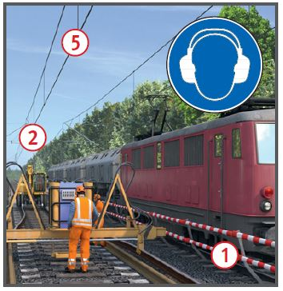
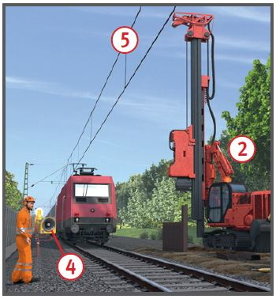
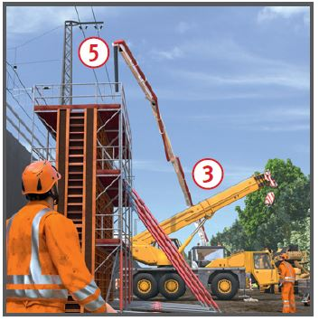

Arbeiten im Gleisbereich
Arbeitsvorbereitung
|
|

Gefährdungen
- Der Gleisbereich bzw. Gefahrenraum
ist der Raum, in dem
Gefährdungen durch bewegte
Schienenfahrzeuge entstehen.
Dazu gehört auch der Bereich
der Fahrleitungsanlage.
Allgemeines
- Der Bahnbetreiber legt im Rahmen
seiner Verkehrssicherungspflicht
"die für den Bahnbetrieb
zuständige Stelle" (BzS) fest. Die
BzS legt verantwortlich die
Sicherungsmaßnahmen gegen
Gefahren aus dem Bahnbetrieb
entsprechend der Maßnahmenhierarchie
im Arbeitsschutz und
dem Regelwerk fest.
- Jeder Unternehmer (auch
Nachunternehmer) ist verpflichtet,
für sein Unternehmen geplante
Arbeiten bei der BzS
anzuzeigen, wenn:
- Arbeiten im Gleisbereich
ausgeführt werden sollen,
- die Gefahr besteht, dass
Mitarbeiter oder Maschinen auch
unbeabsichtigt in den Gleisbereich hineingeraten können.
- Der Unternehmer hat alle Angaben
zu machen, aus denen
die BzS einen Rückschluss auf
den geplanten Umfang der Arbeiten
ziehen kann und die geeignete
Sicherungsmaßnahmen
entsprechend festlegen kann.
- Die Vorgaben der zuständigen
BzS beachten. Weitere Angaben
für die DB Netz AG sind u.a.:
- Art, Ort und Zeit der Arbeiten,
- Anzahl der Arbeitskräfte,
- Art und Ausdehnung der Arbeitsstelle inkl. Entfaltungslänge der gleisgebundenen Baumaschinen sowie die Vor- und Nacharbeiten,
- Wege von und zur Arbeitsstelle am bzw. im Gleisbereich, (z. B. Verkehrswege, Querung der Bahngleise, Transportweg von Weichengroßteilen vom Vormontageplatz zur Einbaustelle),
- Art, Anzahl, Länge und ggf. Störschallpegel (zur ATWS-Projektierung) der geplanten Maschinen/Geräte (z. B. auch Rollwagen)
 ,
,
- Arbeiten im Gleis: größte notwendige Arbeitsbreite zur sicheren Ausführung der Arbeiten ab der Gleisachse des Arbeitsgleises in Richtung des Betriebsgleises (Nachbargleis) inkl. Berücksichtigung des Arbeitsraums zur Bedienung von Maschinen/Geräten, lange Arbeitsmittel etc., Seitenläufer neben Maschinen/Wagen sind mit mind. 1 m zu berücksichtigen (z. B. Fließbandtechnik; Schotterentladung mit Fc-Wagen),
- Arbeiten neben dem Gleis: Angabe des Abstands von der Gleisachse des Betriebsgleises zur Grenze des Arbeitsbereiches = Arbeitsbreite (für alle Beschäftigten und Maschinen), unbeabsichtigtes Hineingeraten berücksichtigen,
- neben Maschinen/Geräten (z. B. Schraubmaschine, Schienenumsetzmaschine) ausreichend Bewegungsraum (mind. 80 cm) vorsehen
 ,
,

-
- wenn erforderlich Räumzeit ermitteln und angeben,
- Maschinen, die verfahrensbedingt in den Gleisbereich (inkl. Fahrleitungen) schwenken müssen bzw. Lasten, die über oder neben Gleisen (mit der Gefahr des Hineingeratens in den Gleisbereich) bewegt werden müssen
 ,
,
- kurzzeitiger Aufenthalt von Beschäftigten im Gleisbereich/Gefahrenbereich des Betriebsgleises (z. B. zum Auf-/Abrüsten von Maschinen),
- Arbeiten in Fahrleitungsnähe (z. B. Bahnsteigdacharbeiten, Gerüstbauarbeiten),
- Arbeiten, die die Rückstromführung unterbrechen können (Schienentrennung).

- Bei Arbeiten neben dem Gleisbereich ist auch das unbeabsichtigte Hineingeraten von Beschäftigten und Arbeitsmitteln zu berücksichtigten. Es ist keine Sicherungsmaßnahme erforderlich, wenn:
- zusätzlich neben dem Gleisbereich die Einrichtung eines mind. 2,0 m breiten Schutzstreifens möglich ist. Dieser ist freizuhalten und zu markieren,
- für nicht eingegleiste Baumaschinen Hub- und Schwenkbegrenzungen vorhanden und eingeschaltet sind. Alternativ ausreichenden Abstand einhalten.
Schutzmaßnahmen
-
Kein Aufenthalt im Gleisbereich ohne gültige und wirksame Sicherungsanweisung/-maßnahme!
Sicherungsverfahren
- Die BzS legt auf Grundlage der Unternehmerangaben unter Berücksichtigung der Rangfolge der Maßnahmen ein Sicherungsverfahren für Arbeitsgleis/Nachbargleis fest.
- Dies können in Abhängigkeit des Bahnbetreibers sein (hier DB Netz AG):
- Gleissperrung, technisch Sperrung und/oder Sperrung aus Gründen der Unfallverhütung (UV-Sperrung),
- Feste Absperrung , (erforderlichenfalls mit zusätzlicher Warnung),
- Warnung mit (automatischem) Warnsystem
 (ATWS, Kabel-/Funkanlage, Auslösung mit Schienenkontakt oder Handschalter),
(ATWS, Kabel-/Funkanlage, Auslösung mit Schienenkontakt oder Handschalter),
- Postensicherung (Sicherungsposten, Absperrposten),
- Kombinationen der Maßnahmen,
- Individuelle Warnung nur bei der schnellen Vegetationspflege.
- Das Sicherungsunternehmen plant die Sicherung im Detail auf Grundlage der Unternehmerangaben und ggf. erforderlicher Absprachen.
- Änderungen der Baustellensituation/des Gefährdungspotentials können eine Anpassung (durch das Sicherungsunternehmen) bzw. Änderungen (durch die BzS) der Sicherungmaßnahmen erforderlich machen. Die Arbeiten sind erforderlichenfalls zu unterbrechen.
Vor Arbeitsbeginn
- Die für die Arbeitsstelle gültigen
Sicherungsanweisungen
des Bahnbetreibers müssen vorliegen.
Bei der DB Netz AG:
- Sicherungsplan,
- ggfs. Betriebs- und Bauanweisung (Betra).
- Der Beauftragte der BzS muss
bekannt und erreichbar sein.
- Arbeitszeiten auf die Einsatzzeiten
des Sicherungspersonals
abstimmen.
- Der Aufsichtführende wird arbeitsplatzbezogen
in die Sicherungsmaßnahmen
(durch Sicherungsaufsicht)
und die örtlichen
und betrieblichen Verhältnisse
(durch Bauüberwacher/Technisch
Berechtigten) eingewiesen.
- Der Aufsichtführende weist
seine Mitarbeiter (inkl. später
Hinzukommende) nachweislich
ein.
- Bei akustischer Warnung eine
Wahrnehmbarkeitsprobe unter
ungünstigsten Arbeits- und
Umgebungsbedingungen durchführen.
- Bei Nachtbaustellen ausreichende
Beleuchtung aller
Arbeits-/Verkehrsbereiche einrichten.
- Bei Arbeiten in der Nähe von
Fahrleitungen (Fahrschiene,
Oberleitung, Speiseleitung)
müssen die in der Betra festgelegten
Maßnahmen durchgeführt
sein (Regelfall: Ausschaltung).
Schutzabstand einhalten
bis Spannungsfreiheit durch Verantwortlichen
bestätigt wurde
und sichtbar geerdet wurde.

- Mit den Arbeiten im Gleisbereich
darf erst begonnen werden,
wenn die im Sicherungsplan
festgelegten Maßnahmen
vollständig umgesetzt und wirksam
sind.
- Der Unternehmer (bzw. dessen
Aufsichtführender) prüft und
entscheidet auf der Grundlage
der an der Arbeitsstelle durchgeführten
Sicherungsmaßnahmen,
ob er mit den Arbeiten im Gleisbereich
beginnt.
Mindestinhalt der Einweisung
- Die Einweisungen müssen
mindestens enthalten:
- örtliche und betriebliche Verhältnisse
(u.a. gesperrte Gleise
mit genauer Ortsangabe, Betriebsgleise
mit Geschwindigkeiten und Fahrtrichtungen,
Fahrleitung mit ausgeschaltetem
Bereich bzw. Schutzabstand),
- durchgeführte Sicherungsmaßnahmen
(u.a. arbeitsplatzbezogene
Einweisung, gesicherter Bereich, Verhalten bei
Warnsignalabgabe, Sicherheitsraum,
Weg zur und von der
Arbeitsstelle).
- Die Einweisung ist bei Änderungen
vorgenannter Bedingungen
nachweislich zu wiederholen.
Arbeitsmedizinische Vorsorge
- Arbeitsmedizinische Vorsorge
nach Ergebnis der Gefährdungsbeurteilung
veranlassen (Pflichtvorsorge)
oder anbieten (Angebotsvorsorge).
Hierzu Beratung
durch den Betriebsarzt.
07/2021